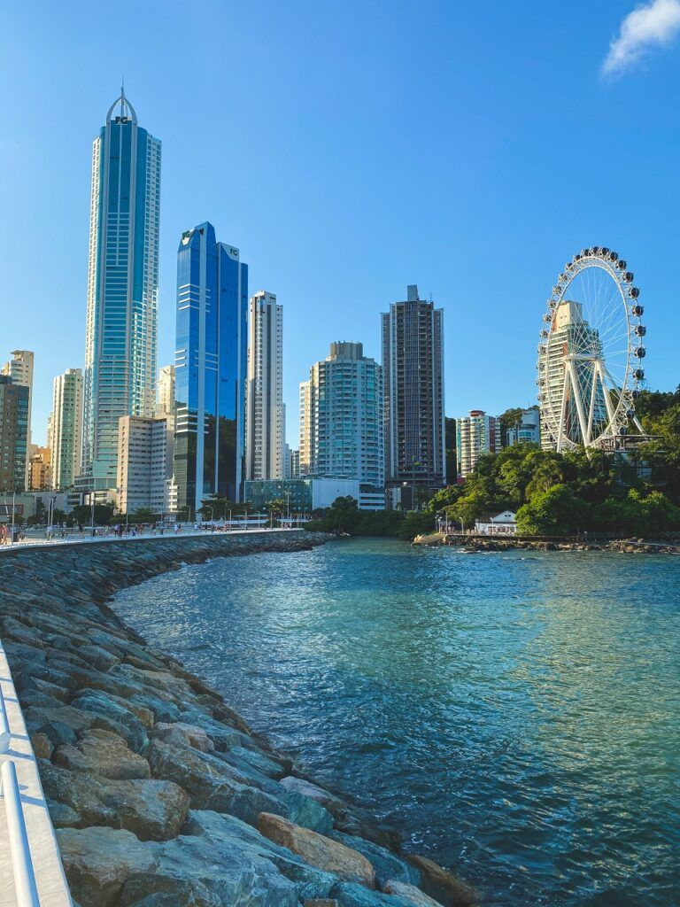
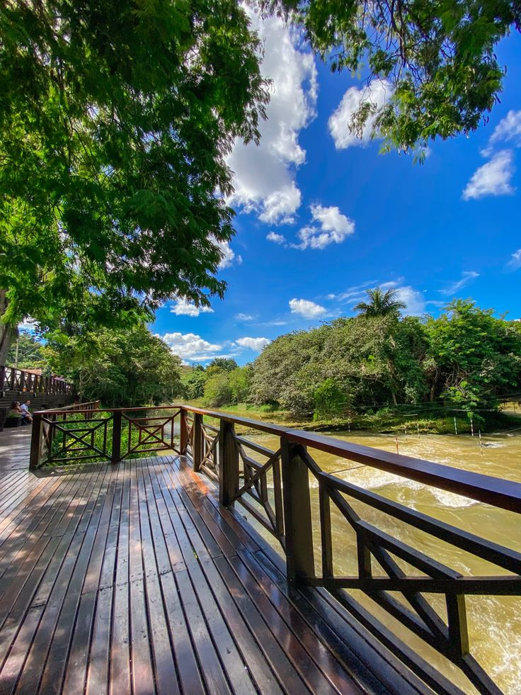
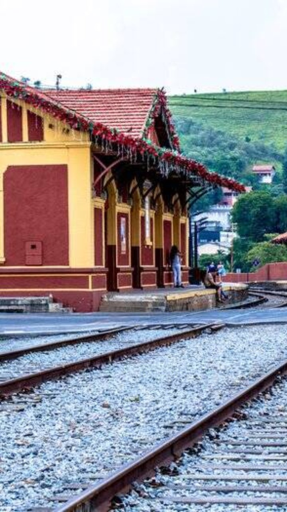
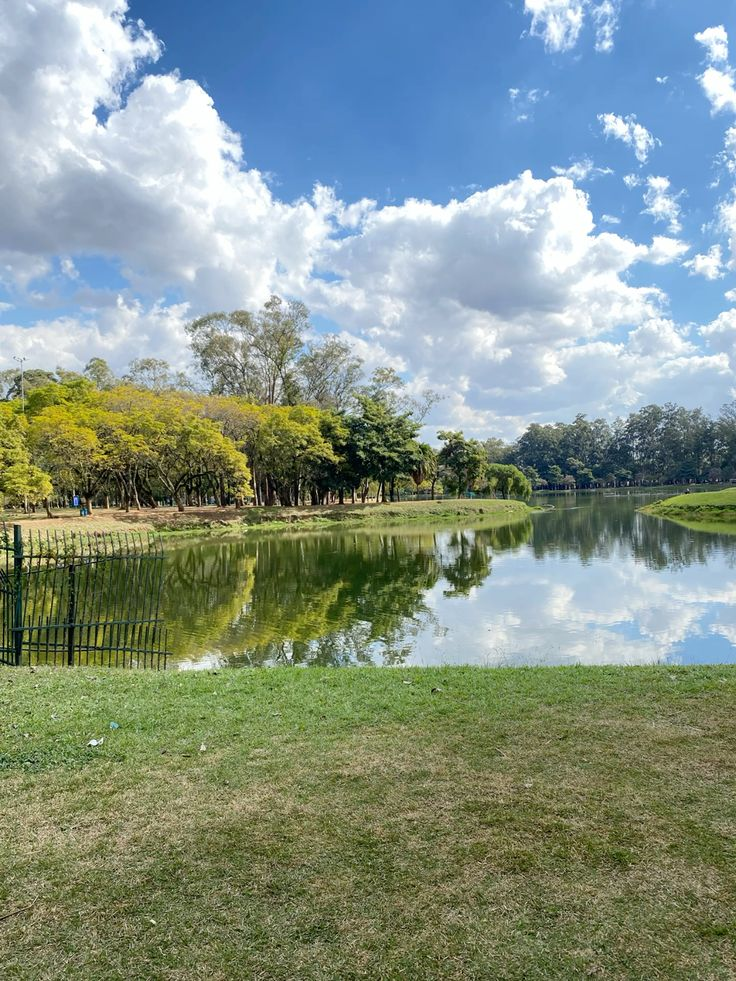

Balneário Camboriú
Balneário Camboriú é uma cidade no litoral do estado de Santa Catarina. Foi a "maior" viagem que fiz na minha vida. As praias são muito boas, não fica muito longe do Beto Carrero, tem a roda gigante e é uma cidade muito bonita. Um dia vou revisitá-la!
Guararema
Guararema é uma cidade no interior do estado de São Paulo. Não muito longe da capital, foi a minha viagem mais recente, em julho desse ano. Aconchegante, cheia de natureza e história; trouxe muitas memórias positivas e é um lugar que quero ir com mais frequência!


Parque Ibirapuera
Agora, para o meu lugar preferido dentro da cidade de São Paulo, eu escolho o Parque Ibirapuera. Gosto de passar tempo em meio a natureza e andar de bicicleta lá, já que é um parque bem grande!
